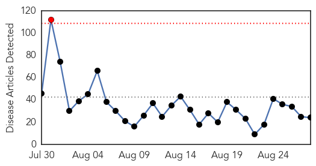
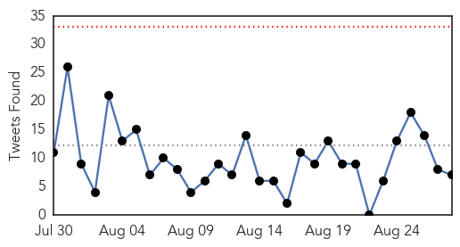
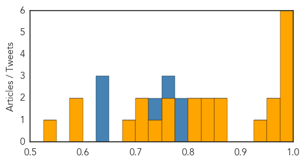

MERS
30-Day Web Trend
0 alerts, 0 warnings

30-Day Twitter Trend
4 alerts, 0 warnings

Article Locations


Article Confidences

Top Articles:
- 0.998
- Riyadh, Jordan each report 2 new MERS cases
- 0.997
- Saudi Arabia sees Mers deaths surge
- 0.996
- Saudi Arabia sees Mers deaths surge
- 0.996
- Saudi Arabia sees Mers deaths surge
- 0.995
- Saudi Arabia Reports Surge in MERS Fatalities
- 0.992
- Deaths from MERS virus surge in Saudi Arabia
- 0.984
- Middle East respiratory syndrome coronavirus: transmission, virology and therapeutic targeting to aid in outbreak control
- 0.981
- KBS World Radio
- 0.981
- Saudi Arabia may ban anyone in contact with MERS patients from performing Hajj - Xinhua
- 0.959
- Jordan reports first coronavirus death in 2015
- 0.941
- Deaths from MERS virus improvement in Saudi Arabia
- 0.889
- Arresting MERS: National Guard health staff barred from Haj
- 0.820
- MERS worry as Hajj dates approach
Top Tweets:
-
No tweets found for Aug 28, 2015
Ebola
30-Day Web Trend
1 alerts, 0 warnings

30-Day Twitter Trend
0 alerts, 0 warnings

Article Locations

Article Confidences
Top Articles:
- 0.998
- Health workers in Sierra Leone perform rap to celebrate country's last Ebola patient given all-clear
- 0.997
- Ohio: Woman Reports Ebola-like Symptoms : MEDICINE & HEALTH : Science Times
- 0.997
- Sierra Leone: Don Bosco Fambul Free Child Hotline Provided Critical Support During Ebola Crisis - Sierra Leone
- 0.992
- IFRC deeply saddened by loss of Red Cross staff member to Ebola
- 0.988
- IMC pays tribute to Qatar Charity for supporting Ebola treatment
- 0.985
- Ebola: Exposing the Chaos of Private Health Care
- 0.970
- Staying safe in Ebola quarantine without Mum or Dad
- 0.952
- NYC names hotel as source of deadly Legionnaires’ outbreak
- 0.949
- TRIBUTE: The unsung Liberian health workers who fought – and defeated – Ebola
- 0.859
- Pres. Sirleaf : New dev't goals have African interest
- 0.857
- 101st recognized for Liberia mission
- 0.846
- Creative Therapy for Ebola Workers In Sierra Leone
- 0.837
- Liberian Leader Meets African Ambassadors in Tokyo, Japan; Says Africa’s Future Belongs to Africans
- 0.823
- 101st Airborne Division Receives Prestigious Unit Award for OUA Mission
- 0.810
- Sierra Leone's first Ebola survivor Victoria Yillia gives birth to a boy
- 0.774
- Boy walks in the river in Kroo Bay slum looking for scrap metal to sell. Kroo Bay, Freetown, Sierra Leone.
- 0.774
- Sierra Leone Telegraph
- 0.749
- Roundup: Ebola scare hampers Africa's int'l tourism growth
- 0.725
- NATCOM Chair Momoh Konte Acclaims ITU as Big Data Confab conclude
- 0.722
- ITU plans massive development for Sierra Leone’s Telecommunications Sector
- 0.691
- Joy as Sierra Leone's first Ebola survivor gives birth to baby boy named Barnabas
- 0.592
- Off Main: A public health issue we don’t think about
- 0.579
- MRU member states end Ebola strategy discussions in Liberian capital
- 0.533
- Carter Center Helps Bolster Liberia’s Mental Health Workforce Following Ebola Epidemic
Top Tweets:
- 0.800
- 101st recognized for its help in Liberia's Ebola outbreak - Clarksville Leaf Chronicle http://t.co/YImBrayFxT ebola EVD
- 0.779
- Sanford Health seeks 30 volunteers to test ebola vaccine - Grand Forks Herald http://t.co/WB51aBZrsA ebola EVD
- 0.752
- .@nprGlobalHealth reports that the Ebola epidemic is winding down w/ no new cases in Liberia + Sierra Leone http://t.co/OLmDQ9ILnp
- 0.728
- Abe pledges to support Liberia's recovery from Ebola epidemic during meeting ... - The Japan Times http://t.co/lpaKD0ZHcJ ebola EVD
- 0.649
- Ohio: Woman Reports Ebola-like Symptoms - Science Times http://t.co/ZaeYJVT8SN ebola EVD
- 0.629
- The indirect complications of the Ebola crisis and its impact on malaria control - BMC Blogs Netwo... http://t.co/1x6yhTRJxy ebola EVD
- 0.629
- Sierra Leone's first Ebola survivor Victoria Yillia gives birth to a boy - Daily Mail http://t.co/Pf9mOoWjaZ ebola EVD